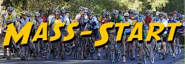

|
 |
 |
|
Mix Canyon Road
|
RSVP for today's climb after the previous week's climb!
| Check out the results of the Diabolical Duo Strava Challenge! Nine riders climbed both Mix and Gates Canyon Road on Low-Key day! |
| results? | right here! |
| profile |  |
| distance | 4.91 miles (7.9 km) |
| climbing | 2257 ft (687 meters) |
| grade | 8.74% |
| where? | see below |
| when? | 05 Nov 2011 |
| what time | registration 9:00 to 10:00 climb starts @ 10:10 |
| RSVP | check back later! |
| waiver | Please fill one out before the climb! |
| how? |  |
| how much? | $10 (free for juniors and those with volunteer credit) |
| why? | why not? |
| coordinator | |
| volunteers | sign up! |
| aerial view | Stanford Cycling |
| weather | Weather Underground |
| deja-vu? | New! |
| BikeMap | |
Sorry, folks! Our insurance requires all riders wear helmets during the climb, and we follow the USA Cycling rule against ear buds or other head phones. Rock to tunes before the climb, perhaps, but we need riders to pay attention to what's happening during the climb...
New! Registration will be at Foothill Drive, just off Pleasants Valley Road, with open space on both sides of the road, 2 miles before Mix Canyon. After registration we'll ride to the intersection of Mix Canyon Road and Pleasants Valley Road from where we'll start the actual climb at no earlier than 10:15 am.
For most Low-Keyers, this is a bit of a haul. Fortunately, you can increase the return on your driving investment by doing a two-fer. Near Mix Canyon Road is Gate Canyon Road; which of the two is more difficult is open to debate. There's a nice report on the two climbs in the Toughest Ascent Blog, as well as by Stanford Cycling.
Volunteers make Low-Key tick! Without them, we no longer function. Please sign up for any week in the series using our new volunteer form! Thanks!!!
Low-Key is all about a group of friends riding up a hill together. It's like any other informal group ride, except we time you to the top and report the results on our web site. But we have no road closures, no lead vehicle, no follow vehicle. We are traffic, sharing the roads with other traffic, following the laws and courtesy which applies to traffic. Think of it as a human-assisted Strava. We're each responsible for our own actions out there, on and off the bike, both as users of the road as as courteous visitors to the neighborhoods we pass through. "Ceci n'est pas un race".
{kind=link}